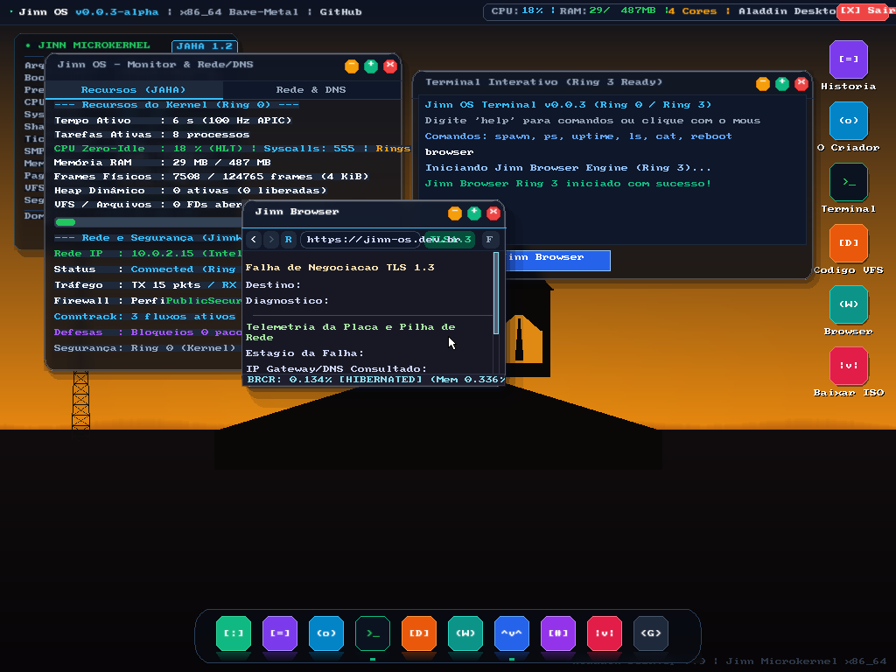

Debugging TLS 1.3 Through Packet Capture and End-to-End Testing: Traces PCAP no QEMU e Regressão Cruzada e1000/VirtIO
Parte 2 da série Jinn Browser — Internet Connectivity, TLS and Network Observability. Em um microkernel experimental sem debugger remoto clássico de user space, o cruzamento de capturas PCAP (-object filter-dump) com logs seriais determinísticos e screendump automatizados em QEMU foi decisivo para localizar erros sutis de transporte, criptografia e regressão em múltiplos drivers de rede.
1. Diagnóstico do que foi Levantado (Antes vs. Trace PCAP)
-
Sintoma inicial em VirtualBox/QEMU: conexões IP HTTP diretas renderizavam páginas, mas domínios HTTPS reais caíam em Falha de Negociacao TLS 1.3 com campos diagnósticos vazios (
Estagio da FalhaeIP Gateway/DNS Consultadosem preenchimento). -
Causas raiz reveladas pelo trace de pacotes e logs
[TLS-HTTP-RX]: (1) servidores atrás de Cloudflare / GitHub Pages dividem registros de handshake entre múltiplos segmentos TCP, exigindo reassembly emHS_REASM_BUF; (2) falhas de máscara 44/44/42 bits no Poly1305 rejeitavam tags AEAD válidas; (3) ausência deTLS_AES_128_GCM_SHA256derrubava servidores sem preferência ChaCha20; (4) o alerta cifradoclose_notify(level=1, desc=0) no mesmo burst do corpo HTTP interrompia leituras antes do flush ao renderizador.
2. Melhorias Implementadas & Suítes E2E Reproduzíveis
Instrumentação PCAP + Monitor QEMU
As suítes automatizadas conectam via socket TCP ao monitor do QEMU, injetam teclado PS/2 (sendkey) e mouse, gravam todo o tráfego L2/L3/L4 via filter-dump para arquivos .pcap e validam ARP, UDP/53 (DNS) e TCP/80/443 com contagem exata de pacotes antes e depois do cache.
Resultados Medidos na Regressão
Após as últimas edições: test_dns_cross_pcap.py aprovado em Intel e1000 e VirtIO-Net; test_hot_routes_e2e.py validou 15/15 DNS, 10/10 Fast-Path, ARP=0 DNS=0 em navegação repetida após reboot e cpu1..cpu3 idle=100.00%; test_jaha_12_integrity.py concluiu com Discrepancy: 0 bytes.
3. Evidência Visual: Antes (Falha Cega) vs. Pós-Correção E2E

https://jinn-os.dev.br falhando no handshake TLS 1.3 com rótulos de diagnóstico vazios — ponto de partida da investigação PCAP no QEMU.

301→302→308, decodificação de PNG 96x48 via <picture>/<source srcset>, BMP 64x32 e layout tabular no desktop Aladdin.
4. Aplicabilidade: Indústria, Uso Doméstico e Servidores
Usos Industriais & Automação Embarcada
Permite reproduzir falhas de campo (timeout de gateway, perda de fragmentos TLS ou variação de driver NIC) dentro de QEMU com o mesmo fluxo PCAP antes de atualizar imagens em controladores edge sem GPU.
Usos Domésticos & Estabilidade de Rede
Garante por regressão automática em dois drivers distintos (e1000 e VirtIO-Net) que alterações no cliente web ou compositor não quebrem resolução ARP/DNS nem gerem consumo ocioso de CPU.
Usos em Servidores & Redes Determinísticas
Validação objetiva por PCAP de que o cache persistente HotRouteTable elimina consultas redundantes (ARP=0 DNS=0 em reboots subsequentes) preservando integridade de memória (0 bytes discrepancy no JAHA 1.2).
5. Limitações Conhecidas & Próximas Etapas
Os traces PCAP automatizados validam hoje emulação user-net do QEMU (`10.0.2.x`); testes com perda artificial de pacotes, alta latência WAN e validação física direta em NICs bare-metal fora de emulador permanecem como próximas etapas de validação.
Jinn Engineering Observatory • Open Collaboration
Applicable Ecosystems & Open Collaboration
Conexões arquiteturais deste estudo com domínios industriais, pesquisa científica e infraestrutura auditável:
Chamada Aberta: Indústria Local, Academia & Setor Público Eticamente Responsável
Convidamos empresas regionais de automação industrial e integradores, universidades e grupos de pesquisa em sistemas operacionais e projetos públicos/governamentais eticamente responsáveis (com transparência e código auditável) a reproduzirem estes experimentos em bancada física, propor workloads comparativos ou avaliar pilotos com o Jinn OS e o JHCS.
![[Valid RSS]](/valid-rss-rogers.png "Validate my RSS feed")